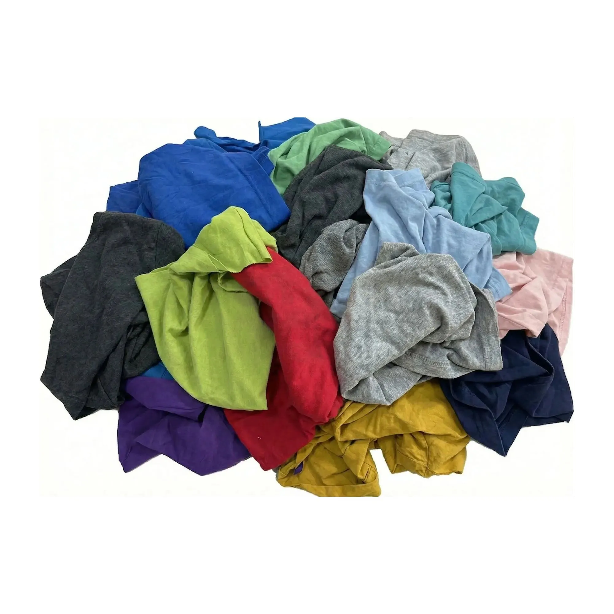

New Unwashed Knit Rags (Raw) Raw
Cost-effective raw knit rags designed for versatile industrial use and general maintenance.
| Material | Available in smooth or mixed knit constructions. |
| Application | Ideal for general-purpose cleaning and wiping. |
| Colors | Available in both sorted and unsorted color mixes. |
| Size | Minimum 13"×13" to 24"×24" (Random Cut). |
| Packaging | Retail (1lb, 2lbs, 5lbs, 10lbs, 20lbs, 50lbs) and Bulk (700–900 lbs). |